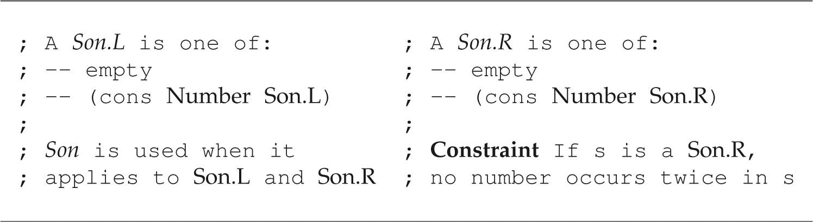
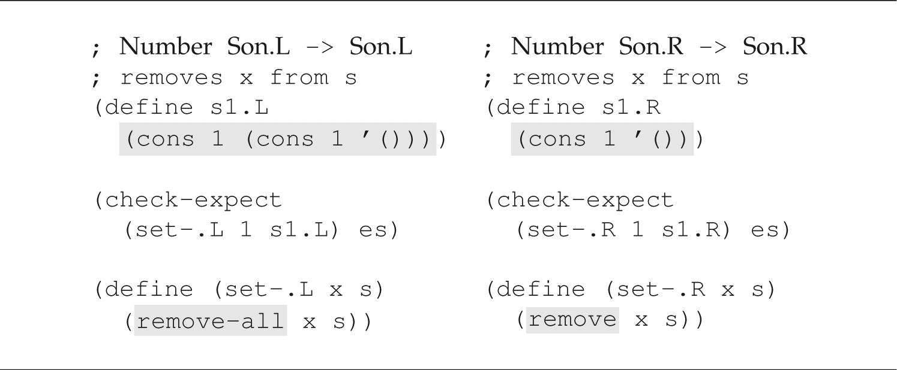
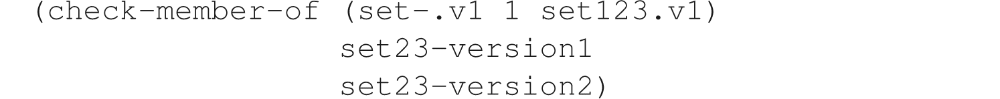

9.6 A Note on Lists and Sets
This book relies on your intuitive understanding of sets as collections of BSL values. Chapter 5.7 specifically says that a data definition introduces a name for a set of BSL values. There is one question that this book consistently asks about sets, and it is whether some element is in some given set. For example, 4 is in Number, while "four" is not. The book also shows how to use a data definition to check whether some value is a member of some named set and how to use some of the data definitions to generate sample elements of sets, but these two procedures are about data definitions, not sets per se.
At the same time, lists represent collections of values. Hence you might be wondering what the difference between a list and a set is or whether this is a needless distinction. If so, this section is for you.
Right now the primary difference between sets and lists is that the former is a concept we use to discuss steps in the design of code and the latter is one of many forms of data in BSL, our chosen programming language. The two ideas live at rather different levels in our conversations. However, given that a data definition introduces a data representation of actual information inside of BSL and given that sets are collections of information, you may now ask yourself how sets are represented inside of BSL as data.
Most full-fledged languages directly support data representations of both lists and sets.
While lists have a special status in BSL, sets don’t, but at the same time sets somewhat resemble lists. The key difference is the kind of functions a program normally uses with either form of data. BSL provides several basic constants and functions for lists—say, empty, empty?, cons, cons?, first, rest—and some functions that you could define yourself—for example, member?, length, remove, reverse, and so on. Here is an example of a function you can define but does not come with BSL
; List-of-string String -> N
; determines how often s occurs in los
(define (count los s)
0)
Stop! Finish the design of this function.
Let’s proceed in a straightforward and possibly naive manner and say sets are basically lists. And, to simplify further, let’s focus on lists of numbers in this section. If we now accept that it merely matters whether a number is a part of a set or not, it is almost immediately clear that we can use lists in two different ways to represent sets.
Figure 62 displays the two data definitions. Both basically say that a set is represented as a list of numbers. The difference is that the definition on the right comes with the constraint that no number may occur more than once on the list. After all, the key question we ask about a set is whether some number is in the set or not, and whether it is in a set once, twice, or three times makes no difference.

Figure 62: Two data representations for sets
Regardless of which definition you choose, you can already define two important notions:
; Son
(define es '())
; Number Son -> Boolean
; is x in s
(define (in? x s)
(member? x s))
The first one is the empty set, which in both cases is represented by the empty list. The second one is a membership test.
One way to build larger sets is to use cons and the above definitions. Say we wish to build a representation of the set that contains 1, 2, and 3. Here is one such representation:
(cons 1 (cons 2 (cons 3 '())))
And it works for both data representations. But, is
(cons 2 (cons 1 (cons 3 '())))
really not a representation of the same set? Or how about
(cons 1 (cons 2 (cons 1 (cons 3 '()))))
The answer has to be affirmative as long as the primary concern is whether a number is in a set or not. Still, while the order of cons cannot matter, the constraint in the right-hand data definition rules out the last list as a Son.R because it contains 1 twice.
The difference between the two data definitions shows up when we design functions. Say we want a function that removes a number from a set. Here is a wish-list entry that applies to both representations:
; Number Son -> Son
; subtracts x from s
(define (set- x s)
s)
The purpose statement uses the word “subtract” because this is what logicians and mathematicians use when they work with sets.
Figure 63 shows the results. The two columns differ in two points:
1. The test on the left uses a list that contains 1 twice, while the one on the right represents the same set with a single cons.
2. Because of these differences, the set- on the left must use remove-all, while the one on the right gets away with remove.

Figure 63: Functions for the two data representations of sets
Stop! Copy the code into the DrRacket definitions area and make sure the tests pass. Then read on and experiment with the code as you do.
An unappealing aspect of figure 63 is that the tests use es, a plain list, as the expected result. This problem may seem minor at first glance. Consider the following example, however:
(set- 1 set123)
where set123 represents the set containing 1, 2, and 3 in one of two ways:
(define set123-version1
(cons 1 (cons 2 (cons 3 '()))))
(define set123-version2
(cons 1 (cons 3 (cons 2 '()))))
Regardless of which representation we choose, (set- 1 set123) evaluates to one of these two lists:
(define set23-version1
(cons 2 (cons 3 '())))
(define set23-version2
(cons 3 (cons 2 '())))
But we cannot predict which of those two set- produces.
For the simple case of two alternatives, it is possible to use the check-member-of testing facility as follows:

If the expected set contains three elements, there are six possible variations, not including representations with repetitions, which the left-hand data definition allows.
Fixing this problem calls for the combination of two ideas. First, recall that set- is really about ensuring that the given element does not occur in the result. It is an idea that our way of turning the examples into tests does not bring across. Second, with BSL’s check-satisfied testing facility, it is possible to state precisely this idea.
Intermezzo 1 briefly mentions check-satisfied, but, in a nutshell, the facility determines whether an expression satisfies a certain property. A property is a function from values to Boolean. In our specific case, we wish to state that 1 is not a member of some set:
; Son -> Boolean
; #true if 1 a member of s; #false otherwise
(define (not-member-1? s)
(not (in? 1 s)))
Using not-member-1?, we can formulate the test case as follows:
(check-satisfied (set- 1 set123) not-member-1?)
and this variant clearly states what the function is supposed to accomplish. Better yet, this formulation simply does not depend on how the input or output set is represented.
In sum, lists and sets are related in that both are about collections of values, but they also differ strongly:
property |
lists |
sets |
||
membership |
one among many |
critical |
||
ordering |
critical |
irrelevant |
||
# of occurrences |
sensible |
irrelevant |
||
size |
finite but arbitrary |
finite or infinite |
||
The last row in this table presents a new idea, though an obvious one, too. Many of the sets mentioned in this book are infinitely large, for example, Number, String, and also List-of-strings. In contrast, a list is always finite though it may contain an arbitrarily large number of items.
In sum, this section explains the essential differences between sets and lists and how to represent finite sets with finite lists in two different ways. BSL is not expressive enough to represent infinite sets; exercise 299 introduces a completely different representation of sets, a representation that can cope with infinite sets, too. The question of how actual programming languages represent sets is beyond the scope of this book, however.
Exercise 160. Design the functions set+.L and set+.R, which create a set by adding a number x to some given set s for the left-hand and right-hand data definition, respectively.